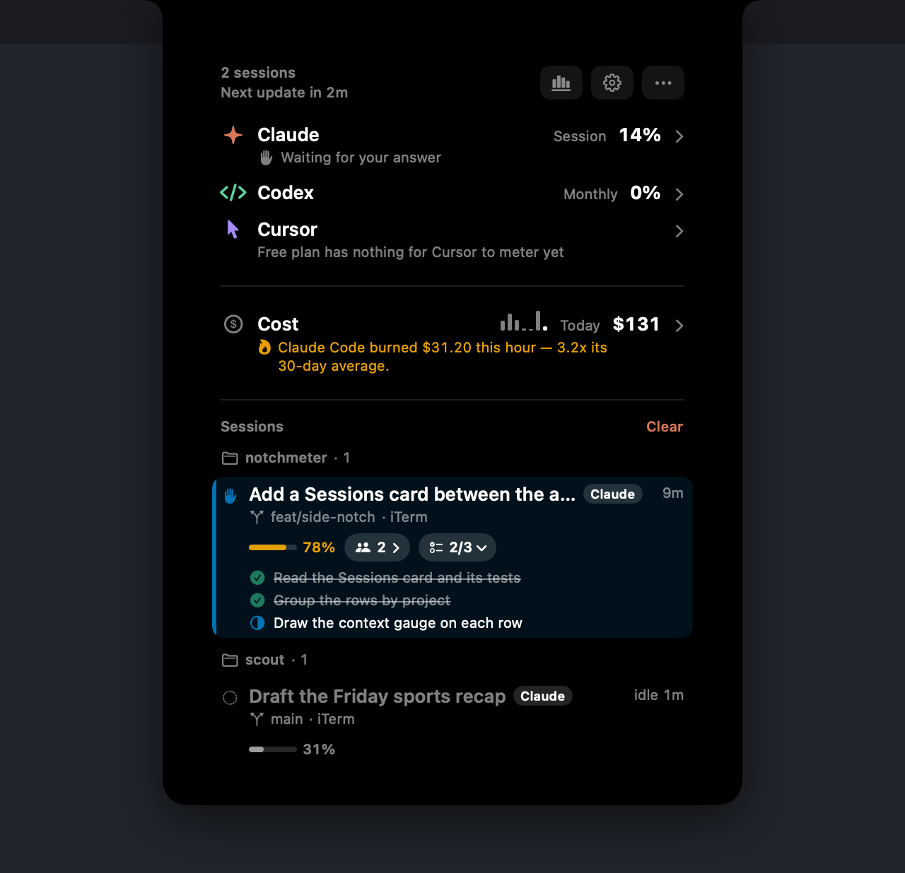
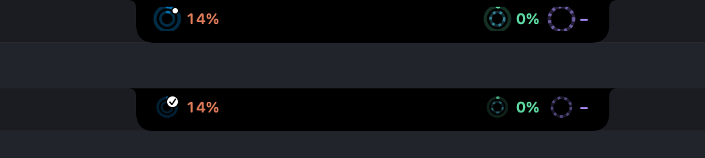
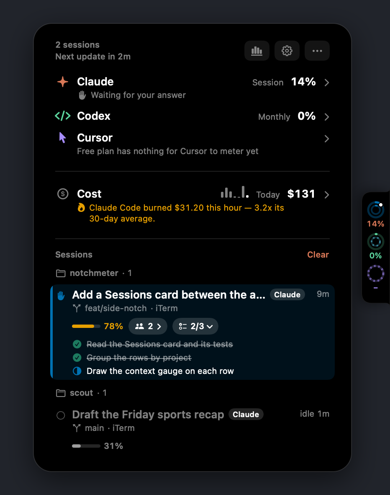

Your menu bar ran out of room three apps ago.
This one doesn't take any.
Usage meters for AI coding tools, living in the MacBook notch — or on any screen edge you prefer. Small rings sit beside the notch all the time; hover and it opens into the full readout.
macOS 14 or later · Apple silicon or Intel · no account, ever
Claude Code, Codex, Cursor, Antigravity and Copilot, on one strip.
No account, no token stored, nothing leaves your Mac.
Measured while idle. Nothing at all while the screen is locked.
MIT licensed. Build it yourself if you'd rather.
Every other meter tells you how much
Notchmeter also tells you what to do about it. The rules are pure functions, run over every visible tool's live reading, and each one is worded as an instruction rather than a percentage.
The whole picture, on hover
Every meter shows a pace tick — where an even burn would be right now — a projection (“~67% left at reset”, or “Runs out in 2h”), and the reset time as a countdown or an exact time.
The Cost card adds what your local Claude Code sessions would have cost at API list prices: today, yesterday and the last 30 days, with a 30-day trend, split by model and by project.

Read from the tool that owns the account
Each reading is borrowed from the assistant itself, on the login that assistant already keeps on your Mac. Switch accounts in the tool and the notch follows.
Claude Code
The 5-hour session window, the weekly window, and the per-model weekly limits Anthropic publishes — plus what your local sessions would have cost at API list prices.
Codex
The session, weekly or monthly rate-limit windows from the same backend Codex itself asks, with the snapshots Codex writes into session rollouts as a fallback when offline.
Cursor
Included plan usage and on-demand spend for the current billing cycle, read the way cursor.com's own dashboard reads it.
Antigravity / Gemini CLI
The per-model quota Google meters — Gemini Pro, Flash, Flash Lite, and any Claude or GPT model the plan covers — from the same Code Assist endpoint Gemini CLI's /stats reads.
GitHub Copilot
The premium-request allowance for the month, and the chat and completion quotas when a plan meters them, from the endpoint Copilot's own editor plugin asks.
Your own sessions
With the optional hook, the notch refreshes the moment a turn ends and counts the sessions you have running, on every ring: Claude Code, Codex, Cursor, Gemini CLI and GitHub Copilot CLI each have one. Claude Code, Codex, Gemini CLI and Copilot also say when they stop to ask you something, and which project is waiting; Cursor has no event for a wait, so its ring never claims one.

It says when an assistant wants you
When Claude Code stops for a permission prompt or a question, the rings take the blue that means needs you, not running out, and a white dot says which readout it is — with a count when more than one session is waiting. A turn ending gets the same blue and a tick, for ninety seconds, on every ring with a hook. Claude Code, Codex, Gemini CLI and Copilot report a wait, because each documents an event that means the agent is asking you. Cursor's cannot show one: Cursor has no hook event for a wait, so its ring shows the tick and never the dot, rather than guessing.
Colour is never the only carrier. The dot and the tick stay if you turn the colour off, the cap on a ring's end keeps saying a window is nearly gone, and every readout has a VoiceOver label.
Notch, or any edge you like
No notch, or you'd rather it lived elsewhere? The left and right edges cut the same notch shape into the side of the screen and open the panel beside it, with the readings still on the glass. There's a bar above the Dock too, and a pill under the menu bar on a notchless Mac.
Beside the notch, the strip fits itself to the room the menu bar actually leaves: it moves aside as the frontmost app's menus grow, and only once both ends have closed in does it drop to plain rings.

The privacy model is the product
Notchmeter never signs in anywhere and never stores a token. It reads the login the vendor's own tool already put on this Mac, makes the one status read that tool itself makes, and passes it on to nobody.
- One status read per tool, on that tool's own saved login
- Reads your local Claude Code transcripts for the cost figures
- Keeps everything on the Mac it runs on
- Asks for Accessibility only if you choose the Auto layout
- No account, no sign-in, no cloud, no analytics
- Never stores or forwards a token
- Never sends a prompt, a transcript or a project path anywhere
- Never probes an inference endpoint for rate-limit headers
Small enough to forget it's there
Measured on an M5 Pro running macOS 26, with a heavy Claude Code job in the background.
of one core over 60 seconds with the panel closed and no cost scan due.
resident, with three-and-a-half thousand transcripts on disk.
while the screen is locked, the displays are asleep, or the Mac is.
Install it
macOS 14 Sonoma or later, Apple silicon or Intel. Signed, notarised, and it updates itself.
Free forever, MIT licensed. If it earns its place in your notch, support the project. Managing a team's AI spend? Notchmeter Teams is in development.